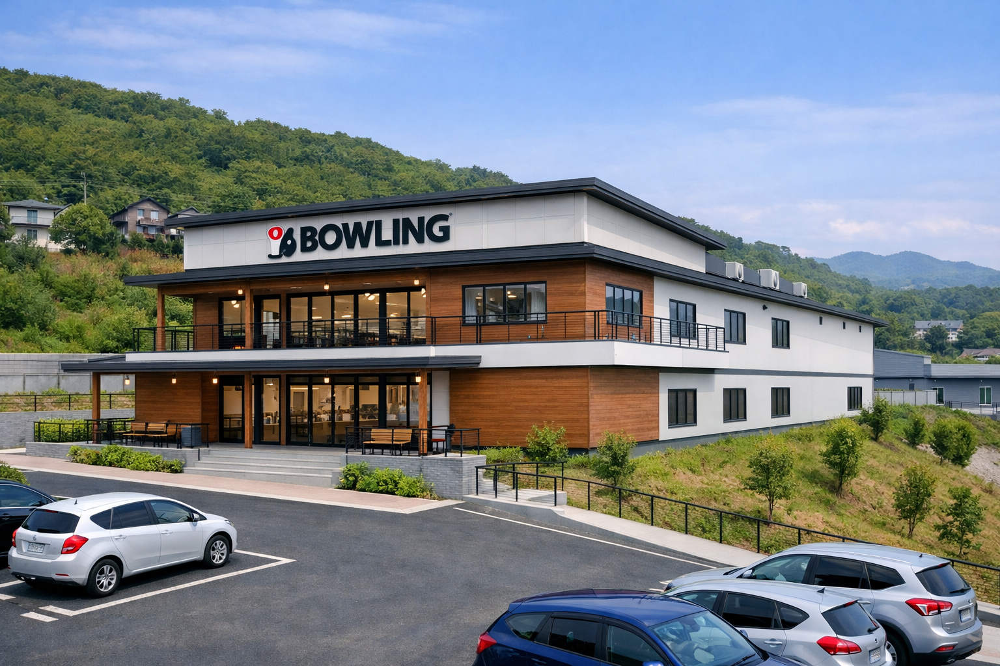

競技者が静かに集中できる、本物の練習環境を目指して。
私が目指すのは、競技者が集中して練習できる静かなボウリング場です。
騒がしさを排除し、レーンの品質とオイルパターンを徹底管理し、
競技者が安心して投げられる“本物の練習環境”をつくりたい。
同時に、地域の高齢者や初心者が健康のために軽く体を動かせる
“教育型の開放”も行い、地域の健康拠点としての役割も果たしたい。
娯楽目的の騒がしいボウリング場ではなく、
スポーツとしてのボウリングを大切にする場所をつくることが目的です。
こんにちは。純子と申します。長年ボウリングに関わる中で、競技者が静かに集中して練習できる環境が地域にほとんど存在しないことを痛感してきました。騒がしさを排除し、レーンの品質やオイルパターンを安定して管理できる“本物の練習環境”を求める声は多く、私自身もずっと必要性を感じていました。また、競技者だけでなく、地域の高齢者や初心者が正しい知識で安心して体を動かせる場所も不足しています。「競技者が技術を磨ける場所」と「地域の人が健康のために立ち寄れる場所」──この2つを両立したボウリング場をつくりたい。その想いから、このプロジェクトを立ち上げました。
これは、私の“夢の夢”のプロジェクトです。
でも、夢だからこそ応援してほしい。
夢だからこそ、誰かの心に届く。
競技者が安心して投げられる場所を。
初心者が正しい知識で学べる場所を。
地域の人が健康のために立ち寄れる場所を。
どうか、この夢の実現を一緒に応援してください。